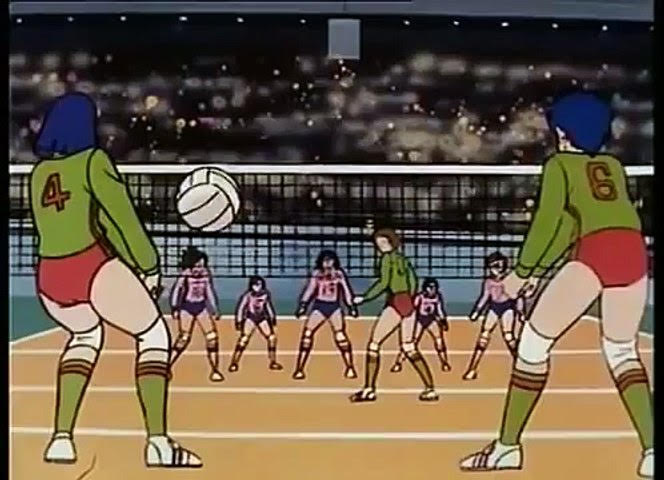
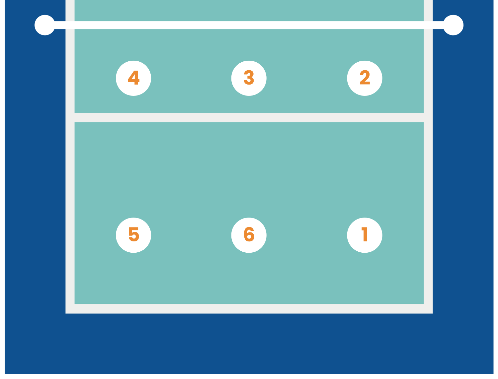

Le volleyball
Le volleyball est un sport de ball collectif sans contact (le seul ! ). Il oppose 2 équipe de 6 joueur séparer par un filet. Le but est de faire tombé la ball chez l'adversaire. Pour cela, chaque équipe peux touché, au maximum, 3 fois la balle avant de la renvoyer chez l'adversaire. Pour gangner un match de volley une équipe doit marquer 3 set (une équipe doit marqué 25 point pour gagner un set).
Je vous conseille de visiter ce site pour avoir des précision sur les règles

Il existe plusieur type de volley :
- le beach-volley
- le snow volleyball
- le volleyball aquatique
Au volley il les joueurs tourne et change de placement sur le terrain à chaque fois qu'il repreine le service a l'adversaire. Mais la plus part des joueur professionels ont un poste atitrer. Voici quelque exemple de poste :

Le numéro 1:
l’arrière droit :
L’arrière droit est charger de relever les ballons qui viennent dans sa zone sur les services et attaques adverses et mettre son passeur dans les meilleures conditions pour jouer de ballon. Il doit présenter de bonnes qualités défensives en manchette(lecture trajectoire, souplesse, rapidité, explosivité …). Il peut être amené également à attaquer depuis la zone arrière. Il doit donc également présenter des qualités de détente, de force et de précision.Le numéro 2:
l’avant droit ou pointu :
L’ailier droit se place en position 2. En général, il est chargé d’attaquer. Pour cela, il doit présenter des grandes facultés de détente, de frappe et de précision. C’est le joueur que le passeur va rechercher en priorité quand il ne peut jouer le ballon correctement après une mauvaise réception. Le pointu doit être capable d’attauqer dans toutes les positions et avec n’importe quel qualité de passe. En défense, il va constitué le block. Pour cela, il doit présenter des grandes facultés de détente et de lecture de jeu.Le numéro 3:
l’avant centre ou central :
Il est amené a attaquer sur des courtes ou des longues et constitue la base du contre en situation défensive. pour cela, il est amené à se déplacer pour à gauche ou àdroite selon l’attaque adverse. Il doit présenter des qualités de détente, de déplacement et de lecture du jeu.Le numéro 4:
l’avant gauche
En général, il est chargé d’attaquer. Pour cela, il doit présenter des grandes facultés de détente, de frappe et de précision. En défense, il va constituer le block. Pour cela, il doit présenter des grandes facultés de détente et de lecture de jeu.Le passeur
C’est le joueur qui est chargé de jouer les deuxièmes ballons et mettre dans les meilleures positions possibles les attaquants. Le passeur se place après le service généralement :- en 2 quand il est sur les positions avant (2,3 ou 4). – en 1 quand il est sur les positions arrières (1,5 ou 6).
Le joueur libéro
Le libéro est différent des autres joueurs. Il a pour fonction de faire des réceptions de service où il se doit d’exceller. Il reste sur le banc des joueurs jusqu’à temps que l’entraîneur l’envoie sur le terrain remplacer un des joueurs arrière. L’échange de joueurs dans ce cas particulier n’a pas besoin d’être noté par l’arbitre. Il ne peut rentrer que sur les trois positions de la ligne arrière et il lui est interdit d’attaquer et de servir. Il est le point fort du secteur réception-défense. Pour un schématique traditionnel , il rentre sur chacun des centraux, après leur position de service, et tourne sur les trois positions arrières.
Qui sont les plus grand joueur de volley ?
Nom-Prenom |
Sexe |
Position |
| Maksim Mikhaylov |
Homme |
Pointu |
| Wilfredo León |
Homme |
Réceptionneur-attaquant |
| Sérgio Dutra Santos |
Homme |
Libéro |
| Brenda Castillo |
Femme |
Libéro |
| Yeon-Koung Kim |
Femme |
Réceptionneuse-attaquante |
| Ting Zhu |
Femme |
Réceptionneuse-attaquante |